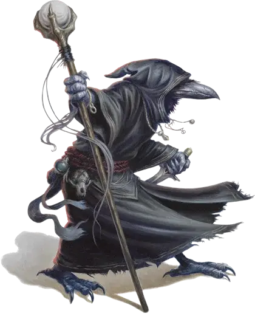

Кенку
Kenku

Карта, которую мы нашли, показала вход в Тайник с сокровищами короля–священника прямо в середине разрушенной части города. Мы без проблем приближались к нашей цели, но, когда мы достигли сгоревшего здания, внезапная какофония зазвучала вокруг нас. Птичий крик, кошачье шипение, собачий лай.
Лидда погнала нас назад, к более безопасным улицам города. Только когда мы вернулись в районы, патрулируемые стражей, она объяснила, что шум означал, что бескрылый народ занял этот район, и что нарушение границы повлечет смерть.
– Гимбл, Заметки Охотника за Сокровищами
Преследуемые древним преступлением, которое лишило их крыльев, кенку блуждают по миру как бродяги и грабители, живущие на отшибе человеческого общества. Кенку имеют зловещую репутацию, которая не совсем уж незаслуженна, но они могут оказаться ценными союзниками.
Древнее проклятие
Кенку однажды служили таинственной, могущественной сущности на другом плане существования. Некоторые полагают, что они были приспешниками Граз’зта, другие говорят, что они были разведчиками и исследователями Герцогов Ветра Аакуы. В любом случае, согласно легенде, кенку предали своего повелителя. Не сумев противиться соблазну красивого сверкающего сокровища, кенку спланировали украсть предмет и сбежать на Материальный План.
К сожалению для кенку, их повелитель раскрыл их план прежде, чем они смогли его осуществить. В ярости, эта сущность наложила на них три ужасных проклятия. Во–первых, любимые крылья кенку иссохли и отвалились, оставив их привязанными к земле.Во–вторых, за то, что их изобретательность и умения обернулись интригами против их покровителя, из их душ была вырвана искра творческого потенциала. И наконец, чтобы гарантировать, что кенку никогда не смогут выдать его тайны, их повелитель лишил их голоса. Как только эта сущность удовлетворилась наказанием, кенку были отпущены на Материальный план. С тех пор кенку блуждают по миру.
Они обосновываются в местах, которые принимают их, обычно мрачные города, которые переживают тяжелое время и наводнены преступностью.
Мечты о полёте
Больше чем что либо, кенку хотят вернуть свою способность летать. Каждый кенку рождается с желанием подняться в воздух, и те, кто изучает колдовство, делают это в надежде овладеть заклинаниями, которые позволят им лететь. Слухи о магических предметах, таких как ковры–самолеты, метлы, способные летать, и аналогичных предметах, пробуждают у кенку большое желание приобрести их себе.
Несмотря на отсутствие крыльев, кенку любят жить в башнях и других высоких строениях. Они ищут руины, которые простираются к небу, хотя им не хватает мотивации и креативности, чтобы сделать в них ремонт или укрепить их. Даже в этом случае, их легкий вес и размер позволяют им жить в хрупких строениях, которые обрушились бы под человеком или тем более орком.
Некоторые гильдии воров используют кенку как наблюдателей и посыльных. Кенку живут в самых высоких зданиях и башнях, контролируемых гильдией, что позволяет им, прячась на верхних уровнях, наблюдать за городом.
Безнадежные плагиаторы
В результате отсутствия у них творческого потенциала, кенку комфортнее быть прислужниками могущественного руководителя. Лидеры стай поддерживают дисциплину и минимизируют конфликты, но они не способны эффективно планировать или составлять долгосрочные планы.
Хотя они неспособны говорить своим собственным голосом, кенку отлично могут подражать любому звуку, который они слышат, от голоса халфлинга до шума камней, падающих вниз по склону.
Однако, кенку не может создать новые звуки и может общаться только используя звуки, которые он уже слышал. Большинство кенку использует смесь из подслушанных фраз и звуковых эффектов, чтобы передать свои идеи и мысли.
К тому же, кенку неспособны придумывать новые идеи или создавать новые вещи. Кенку может скопировать существующий предмет с исключительным умением, что позволяет им стать превосходными ремесленниками и писцами. Они могут копировать книги, делать точные копии предметов, и преуспевать на других должностях, где от них требуется создавать большое количество одинаковых предметов.
Немногие кенку находят удовлетворение в такой работе, так как их поиск свободного полёта делает их малопригодными для занятий рутиной.
Идеальные прислужники
Кенку собираются в группы, называемые стаями. Стаю возглавляет самый старый и самый опытный Кенку с самым широким запасом знаний из которого можно черпать информацию, часто называемый Мастером.
Хотя кенку не может создать новую вещь, у них есть талант к изучению и запоминанию подробностей. Таким образом, амбициозный кенку может отличиться как превосходный шпион и разведчик. Кенку, который знает хитрые схемы и планы, разработанные другими существами, может их использовать. У кенку отсутствует способность импровизировать или изменять план, но мудрый Мастер приводит в исполнение одновременно несколько планов, уверенный, что подчиненные будут в точности следовать приказам.
Поэтому многие кенку живут немудрёной жизнью, служа посыльными, шпионами, и наблюдателями для гильдий воров, бандитов и других преступных картелей. Сеть кенку может передать птичий щебет или подобный шум через город, предупреждая союзников о подходе патруля стражи или сообщая о наилучшей возможности для грабежа.
Так как кенку может точно воспроизвести любой звук, сообщения, которые они передают, редко меняются или теряют смысл. Посыльные–люди могли бы изменить слова или фразы и нечаянно исказить сообщение, но кенку с точностью воспроизводят то, что они слышали.
Искатели приключений кенку
Приключенец кенку — это обычно оставшийся в живых из стаи, которая понесла тяжелые потери, или редкий кенку, которому надоела жизнь преступника. Такие кенку более амбициозны и смелы, чем их товарищи.
Другие начинают самостоятельные исследования тайн полёта, овладевая магией, или пытаются раскрыть тайну своего проклятия и найти способ снять его.
У приключенцев кенку, несмотря на их относительную независимость, все еще есть склонность искать компаньона, чтобы подражать ему и следовать за ним. Кенку любят подражать голосу и словам своего компаньона.
Имена кенку
Учитывая, что кенку может копировать любой звук, их имена состоят из поразительного разнообразия звуков и шумов. Имена кенку в основном делятся на три нижеследующие категории, мужские и женские имена не отличаются.
Кенку головорезы, воины и бандиты используют как имя звук, издаваемый оружием, таким как лязг булавы о броню или звук ломающейся кости. Не-кенку обращаются к кенку, описывая этот звук. Примеры этого типа имен: Разбиватель, Лязгун, Разрезатель, и Грохотун.
Воры, мошенники и грабители кенку используют как имя крики животных, обычных для города. Таким образом кенку могут обращаться друг к другу, в то время как те, кто слышит их, принимают их за обыкновенных животных.
Не-кенку используют имена, которые относятся к издаваемому звуку или к животному, которому кенку подражает, такие как: Крысиный Скрежет, Свистун, Мышатник и Рычун.
Некоторые кенку отворачиваются от преступности, чтобы вести законные дела. Эти кенку используют как имя звуки, издаваемые при их ремесле. Моряк повторяет звук трепещущего паруса, в то время как кузнец подражает лязгу молотка о металл.
Не-кенку дают им имена по ремесленным звукам, такие как Хлопок Паруса, Молоточник и Резатель.
Отыгрыш кенку
Если Вы играете кенку, постоянные попытки подражать шумам могут приводить к путанице или раздражать вместо того чтобы вызывать интерес. Вы можете просто описать звуки, которые издает Ваш персонаж и что он имеет в виду. Поясните намерения своего персонажа, если Вы не стремитесь сознательно к недопониманию или таинственности.
Вы можете сказать следующее: «Щелкун издает звук молотка медленно и ритмично постукивающего по камню, чтобы показать, насколько ему скучно. Он играет со своим кинжалом и изучает агента Альянса Лордов, сидящего в баре». Создание вокабуляра шумов, которые другие игроки должны будут расшифровать, может показаться веселой идеей, но на самом деле это может сильно отвлекать и замедлять игру.
Особенности кенку
Ваш персонаж кенку обладает следующими особенностями.
Увеличение характеристик. Значение вашей Ловкости увеличивается на 2, а значение Мудрости увеличивается на 1.
Возраст. Кенку имеют более короткую жизнь, чем люди. Они достигают зрелости к 12 годам, и могут дожить до 60 лет.
Мировоззрение. Любое.
Размер. Кенку примерно 5 футов (1,5 метра) в высоту и весят от 90 до 120 фунтов (от 40 до 54 килограм). Ваш размер — Средний.
Скорость. Ваша базовая скорость ходьбы составляет 30 футов.
Мастер подделок. Вы можете копировать почерк и ремесло других существ. Вы получаете преимущество на все проверки, проводимые для создания подделки или копии существующего объекта.
Подготовка Кенку. Вы владеете на ваш выбор двумя из следующих навыков: Акробатика, Обман, Скрытность и Ловкость рук.
Имитирование. Вы можете подражать звукам, которые вы слышали, включая голоса.
Существо, которое слышит звуки, которые вы издаете, может определить что это имитация при успешной проверке Мудрости (Проницательность), против вашей проверки Харизмы (Обман).
Языки. Вы можете читать и писать на Общем и Ауране (воздушный диалект Первичного), но вы можете говорить только используя особенность «Имитирование».